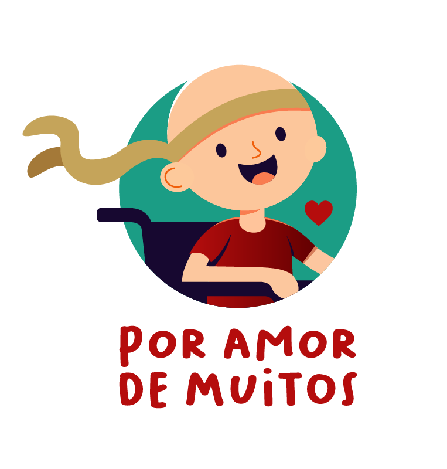

Nós somos uma ONG destinada ao amparo social de famílias que possuem crianças e adolescentes atingidos pelo mal do câncer. O projeto arrecada dinheiro, comida, roupas, materiais de higiene e dá suporte às famílias carentes e desamparadas nesse momento de dificuldade. Pois, na grande maioria das vezes, pais e mães abandonam seus empregos, suas principais fontes de renda, para amparar e lutar uma nova luta com os seus filhos, ficando, assim, sem nenhum tipo de amparo. Visando isso, o projeto surgiu e busca a cada dia ser esse suporte para essas famílias.
O projeto foi criado por Luceny, ou como gosta de ser chamada, Tia Lu, que se considera mãe de vários milagres e também possui a sua própria história de luta e superação, ela, juntamente com mais 8/10 voluntários, se doa diariamente para quase 200 crianças em tratamento nos hospitais IMPI e HPC. Um ponto importante a destacar é que o projeto possui foco em crianças que estão em tratamento, visto que ainda não possuem estrutura para abrigar todas as famílias que buscam o projeto.
Para além de doações, a organização serve com uma família para essas crianças, apoiando psicologicamente e juridicamente, para conseguir o direito aos benefícios e medicações. Além disso, ajudam com a organização de lavanderia e organização de kits de higiene para os dias árduos de exames e medicação em hospitais. Também buscam resgatar a felicidade e o lazer que as crianças perdem devido ao peso da doença.
Para nós ajudar financeiramente a aliviar o sofrimento de quem tanto precisa é muito fácil. Você pode doar qualquer quantia da seguinte forma:
PIX: 50119373/0001-54 (CNPJ)
Transferência Bancária:
Banco BTG - Agência: 0050 - Conta Corrente: 505100-4 - ONG Por Amor de Muitos PE
Além disso, também recebemos doações de diversos itens na nossa sede como:
A ação realizada no dia 20/02/2024 foi mais uma forma de ajudar essas familias queridas. Distribuimos feiras com alimentação, itens de limpeza, etc